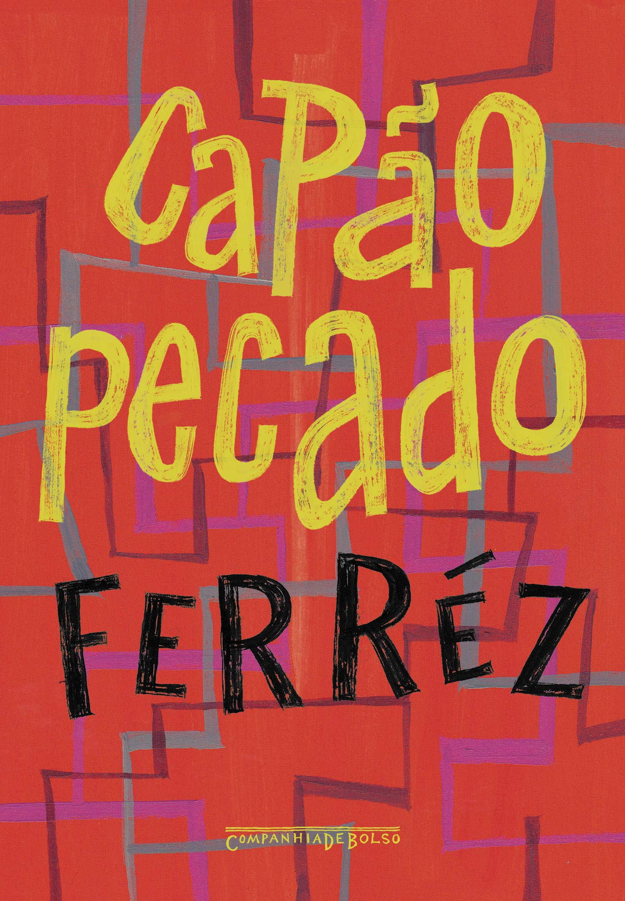

Sobre o Livro

Capão Pecado: Uma Imersão na Realidade da Periferia Brasileira
"Capão Pecado", do aclamado autor Ferréz, em sua 2ª edição publicada em 2000 pela Labortexto Editorial, São Paulo, e com ISBN 85-87917-01-3, é mais do que um romance; é um grito potente e uma janela crua para a vida na periferia de São Paulo. Classificado como Literatura Brasileira e Romance, o livro nos convida a uma jornada que parte do "Universo" e se aprofunda até o "Capão Redondo", um lugar descrito como o "fundo do mundo".
A obra é dedicada a "Marquinhos, meu amigo" (Marcos Roberto de Almeida), com a reflexão "Falta alguém...", e é enriquecida por agradecimentos a diversas figuras e coletivos que, de alguma forma, inspiram ou fazem parte do universo temático do autor, como Mano Brown, Chico Science, Literatura Marginal e Realidade Urbana.
A Periferia Vista de Dentro: Dor, Beleza e Resistência
O prefácio de "Capão Pecado" estabelece o tom da narrativa ao comparar o homem da periferia a uma "pequena árvore desprotegida" à porta de um bar, que é constantemente "beliscada" ou "arrancada". Essa árvore, quando protegida por uma "armadura de madeira", tem sua beleza escondida. A obra explora a luta de quem busca o que lhe foi roubado "pelo sistema", tentando proteger sua sociedade, mas também ocultando sua própria beleza. A luz dos postes, por sua vez, é vista como a "oração do idoso" para que Deus ilumine a vida e a vida dos seus.
Ferréz desvela um Brasil muito além dos cartões-postais, um lugar onde a "família é sintonia" das "doenças mentais" causadas pela injustiça. Capão Redondo é retratado sem floreios como um ambiente de "pobreza, injustiça, ruas de terra, esgoto a céu aberto, crianças descalças, distritos lotados", onde a "tensão e cheiro de maconha" permeiam o ar. É um lugar onde a polícia é uma presença constante e intimidadora, e o futuro parece "ameaçado pelo fantasma da injustiça social". O "sistema" é uma entidade opressora e complexa, que, segundo o autor, "você pode até não ler, mas tudo bem, pelo menos viu a capa". O texto aborda o amor e carinho familiar, mas também a dura realidade de armas e drogas.
A Voz dos Marginalizados: Uma Revolução de Fora para Dentro
Os personagens, como Rael, Matcherros, China, Burgos, Narigaz, Amaral, Dona Maria Bolonhesa e muitos outros, navegam por um cotidiano marcado pela violência e pela busca incessante por dignidade. A polícia é descrita como "despreparada", "agredindo, espancando" e envolvida em "profunda corrupção", contribuindo para o "sufoco do povão".
A narrativa é um ato de resistência e de reconhecimento da própria identidade. A ideia de que "A humildade é a trilha de um vencedor" e o conceito da "revolução dos bandidos beneficentes" são centrais para a compreensão da obra. Ferréz não apenas descreve a realidade, mas a questiona, afirmando que "Se eu quero, eu posso, eu sou", uma declaração de agência e poder por parte daqueles que vivem à margem. O Capão Redondo é simbolicamente chamado de "pecado", uma alusão à condenação social imposta aos seus habitantes.
"Capão Pecado" é uma obra essencial para entender as dinâmicas sociais da periferia brasileira, suas mazelas e, sobretudo, a resiliência, a cultura e a humanidade que florescem mesmo nas condições mais adversas. Ferréz oferece uma perspectiva autêntica e desafiadora, convidando o leitor a romper com preconceitos e a ver a periferia não como um problema, mas como um campo de batalha e de constante (re)invenção da existência.
Sobre Ferréz
Ferréz, nome literário de Reginaldo Ferreira da Silva, nasceu em 1975 no bairro do Capão Redondo, zona sul da cidade de São Paulo, uma das regiões mais emblemáticas quando se discute desigualdade social e violência urbana no Brasil. Sua trajetória como escritor, músico, empresário e ativista social é marcada pela militância em prol da cultura periférica e pelo esforço de dar visibilidade às vozes historicamente silenciadas das classes populares urbanas.
Ferréz consolidou-se como uma das principais figuras do movimento conhecido como "literatura marginal" ou "literatura periférica", expressão cultural que emergiu a partir dos anos 1990 com o propósito de narrar a realidade das periferias brasileiras sem as mediações da literatura canônica ou acadêmica tradicional. Sua obra não apenas expõe os conflitos sociais, a exclusão econômica e a violência estrutural que marcam a vida nas favelas, mas também revela os códigos de solidariedade, resistência e criatividade que permeiam o cotidiano das populações marginalizadas.
Publicado em 2000, Capão Pecado é considerado o romance inaugural desse movimento contemporâneo da literatura de periferia. A obra narra a juventude do Capão Redondo a partir de um olhar interno e legítimo, oferecendo ao leitor uma experiência de imersão na linguagem, nas angústias e nos dilemas éticos dos personagens que lutam diariamente contra o preconceito, o abandono estatal e a brutalidade das condições sociais. Com um estilo direto, cru e visceral, Ferréz recusa a idealização ou a romantização da pobreza, apostando na força de uma narrativa que é ao mesmo tempo denúncia e afirmação de identidade.
Além da literatura, Ferréz atuou em outras frentes culturais, ampliando o alcance de sua mensagem. Como rapper, lançou álbuns que dialogam com os mesmos temas sociais de seus livros. No campo do empreendedorismo social, fundou a marca de roupas 1DaSul, voltada para o público das periferias e carregada de símbolos de resistência e pertencimento comunitário. Também escreveu roteiros para o cinema e para a televisão, sempre com a preocupação de manter a fidelidade ao universo que representa.
A relevância de Ferréz no cenário literário e cultural brasileiro reside na sua capacidade de tensionar as fronteiras entre centro e periferia, alta e baixa cultura, ficção e denúncia social. Sua obra é constantemente estudada em universidades, debatida em escolas públicas e privadas, e tem servido como porta de entrada para jovens leitores que se reconhecem, pela primeira vez, nos livros que leem.
Por sua produção múltipla e por sua ação política e cultural, Ferréz tornou-se um dos principais nomes quando se pensa em literatura engajada no Brasil contemporâneo. Sua escrita rompe o silêncio imposto às periferias urbanas e oferece ao país uma narrativa indispensável para a compreensão das contradições da sociedade brasileira.
Impacto Cultural

O romance Capão Pecado, publicado em 2000, não representa apenas a estreia de Ferréz na literatura brasileira, mas marca também um divisor de águas na forma como as periferias urbanas passaram a ser representadas na ficção nacional. O impacto cultural dessa obra ultrapassa o campo estritamente literário e se projeta nas esferas social, política e midiática, contribuindo para uma ressignificação da imagem da periferia no imaginário coletivo brasileiro.
Antes de Capão Pecado, a representação das favelas e bairros periféricos nas artes era, em grande medida, mediada por olhares externos — jornalistas, acadêmicos, cineastas e escritores de classe média que, embora eventualmente bem-intencionados, muitas vezes reproduziam estereótipos de criminalidade, degradação moral ou vitimização passiva dos moradores dessas regiões. Ferréz, ao contrário, propôs uma narrativa construída de dentro para fora: como morador do Capão Redondo, sua visão de mundo, sua linguagem e seus personagens expressam com autenticidade o cotidiano de uma juventude marcada pela luta por sobrevivência, mas também pela esperança, pela solidariedade e pela inventividade cultural.
O impacto cultural do livro se manifesta, primeiramente, na legitimação da chamada "literatura marginal" ou "literatura periférica" como um campo reconhecido pela crítica, pela universidade e pelos meios editoriais. O sucesso de Capão Pecado abriu caminho para o surgimento de novos autores das periferias urbanas brasileiras, como Sérgio Vaz, Alessandro Buzo e Sacolinha, que passaram a publicar livros de forma independente e a organizar saraus literários em bairros antes invisíveis para o circuito oficial da literatura. Esse movimento ampliou o conceito de quem pode ser considerado "escritor" no Brasil, desafiando os cânones tradicionais que ainda predominavam no cenário literário.
Outro aspecto fundamental do impacto cultural de Capão Pecado está na sua influência sobre a juventude das periferias. O livro tornou-se leitura obrigatória em muitas escolas públicas, sobretudo na cidade de São Paulo, funcionando como uma ponte entre o universo dos estudantes e a literatura — frequentemente vista por eles como um espaço distante e elitista. Ao verem suas próprias realidades, gírias, conflitos e referências culturais representados em uma obra literária, muitos jovens passaram a se interessar pela leitura, pela escrita e pelas manifestações culturais locais, como o rap, o slam e o grafite.
Além da literatura, Capão Pecado dialoga diretamente com outras linguagens artísticas e movimentos sociais. A obra inspirou produções cinematográficas, discussões em coletivos culturais e atividades de resistência social em várias periferias do país. Por meio da marca de roupas 1DaSul, das letras de rap e de projetos sociais, Ferréz ampliou o alcance de sua mensagem, transformando o livro em uma peça central de um movimento cultural mais amplo que inclui moda, música, audiovisual e ativismo comunitário.
Na crítica literária e acadêmica, Capão Pecado provocou debates importantes sobre temas como identidade, território, exclusão social e representação cultural. Pesquisadores de diversas áreas — literatura, sociologia, antropologia, comunicação — passaram a estudar o livro como exemplo de narrativa insurgente que rompe com as normas da estética literária tradicional. O uso da oralidade, da gíria e da linguagem híbrida, típica das ruas, passou a ser valorizado como recurso estético legítimo, e não mais como expressão de falta de domínio da norma culta.
O impacto cultural de Capão Pecado também pode ser medido pela forma como ele alterou a percepção da própria periferia sobre si mesma. A obra contribuiu para a construção de uma nova autoestima coletiva entre jovens periféricos, que passaram a se enxergar como sujeitos de direito, de história e de cultura. Nesse sentido, o romance de Ferréz ultrapassa a literatura e assume a função de ferramenta de transformação social, educacional e simbólica.
Por fim, é importante reconhecer que o impacto cultural de Capão Pecado permanece em expansão. Mais de duas décadas após seu lançamento, o livro segue sendo referência para novas gerações de leitores, escritores e militantes culturais. Sua presença constante em debates acadêmicos, feiras literárias e projetos educacionais demonstra que a obra se consolidou como um marco na literatura brasileira contemporânea, não apenas pelo valor estético de sua escrita, mas pela potência política de sua proposta: dar voz e dignidade aos habitantes das periferias urbanas.
Trechos Marcantes
-
Dedicatória e Sentimento de Perda:
"Falta alguém... Mas ele não virá mais / As noites em claro / A roda de amigos em volta do Postinho / Falta alguém... / Para nos alegrar novamente / Cantar aquela música nova, que tinha escrito há pouco / Falta alguém... / Que vestia a humildade / Mas ele não virá mais / Sorrindo, querendo ver televisão na nossa casa / Tomando café, atento à tela"
Evoca um sentimento de perda e nostalgia, introduzindo a dimensão humana e as relações pessoais como pilar da narrativa.
-
O Cenário do Capão Redondo:
"Capão Redondo / Bem-vindos ao fundo do mundo"
Declaração concisa e poderosa que estabelece o cenário e o tom da obra.
-
Metáfora da Árvore:
"Há uma pequena árvore na porta de um bar, todos passam e dão uma beliscada na desprotegida árvore. Alguns arrancam folhas, alguns só puxam e outros, às vezes, até arrancam um galho. O homem que vive na periferia é igual a essa pequena árvore, todos passam por ele e arrancam-lhe algo de valor. A pequena árvore é protegida pelo dono do bar, que põe em sua volta uma armadura de madeira; assim, ela fica segura, mas sua beleza é escondida."
Metáfora vívida para descrever a vulnerabilidade e resiliência do morador da periferia.
-
A Luz dos Postes e a Realidade:
"A luz dos postes: a oração do idoso que pede para que Deus ilumine sua vida e a vida dos seus; o menino que não concilia o sono com a fome; o barulho dos carros passando pela fresta do barraco, encobrindo a música do disco que fala de muitos na contramão da evolução social, sendo seus destinos infrutíferos, e sendo seus futuros tão gloriosos e raros quanto um belo pôr-do-sol."
Imagem poética e dolorosa da realidade, mesclando esperança e dureza.
-
Família e Crítica Social:
"Família é sintonia, dizem os poetas urbanos sobreviventes do inferno para aqueles de mentes tristes, porém fascinadas em igual proporção com as ilusões carnavalescas de um país que luta por seus times de futebol, mas não luta pela sua dignidade."
Crítica social destacando a desconexão entre prioridades nacionais e dignidade das famílias.
-
Descrição do Capão Redondo:
"Capão Redondo é a pobreza, injustiça, ruas de terra, esgoto a céu aberto, crianças descalças, distritos lotados, veículo do IML subindo e descendo pra lá e pra cá, tensão e cheiro de maconha o tempo todo."
Quadro vívido e brutal do ambiente local.
-
Desafio ao Sistema:
"“Querido sistema”, você pode até não ler, mas tudo bem, pelo menos viu a capa."
Frase carregada de ironia e desafio, expressando a voz dos marginalizados.
-
Humildade e Resiliência:
"A humildade é a trilha de um vencedor"
Máxima de resiliência e autoafirmação.
-
Revolução dos Bandidos Beneficentes:
"A revolução dos bandidos beneficentes"
Conceito provocador que questiona a moralidade convencional.
-
Empoderamento Pessoal:
"Se eu quero, eu posso, eu sou"
Declaração de agência e poder pessoal.
-
Crítica à Mídia e Realidade Dura:
"O crime é que é noticiado no rádio, jornal, televisão é sempre diretamente ligado à miséria. Por quê? Porque pondo os pés no chão, é bruta a nossa realidade."
Crítica à forma como a mídia retrata a periferia e afirmação da dureza da realidade vivida.
Contexto Histórico e Social
A compreensão integral de Capão Pecado, de Ferréz, exige uma análise atenta do contexto histórico e social no qual a obra foi produzida e ambientada. O romance é fruto direto das contradições do Brasil urbano no final do século XX, período marcado pelo agravamento das desigualdades sociais, pela explosão da violência nas periferias metropolitanas e pelo surgimento de novas formas de expressão cultural das camadas populares.
Durante as décadas de 1980 e 1990, a cidade de São Paulo viveu um processo acelerado de urbanização desordenada, que empurrou milhares de famílias de baixa renda para as franjas da metrópole, distantes do centro econômico e cultural da cidade. Bairros como o Capão Redondo — onde o próprio autor nasceu e viveu — tornaram-se símbolos dessa periferização crescente, caracterizada pela precariedade de serviços públicos, desemprego crônico, falta de acesso à educação de qualidade e violência endêmica.
Os anos 1990, especificamente, foram um período crítico para os moradores das periferias paulistanas. O Brasil atravessava um momento de transição econômica, com a implementação do Plano Real (1994) e as reformas neoliberais do governo de Fernando Henrique Cardoso. Embora esses ajustes tenham controlado a hiperinflação e estabilizado a moeda, eles também agravaram a exclusão social, com o aumento do desemprego estrutural e a precarização das relações de trabalho — fatores que atingiram de forma especialmente dura as populações periféricas.
Nesse ambiente, o tráfico de drogas e as facções criminosas, como o Primeiro Comando da Capital (PCC), ganharam força, ocupando o vácuo deixado pelo Estado nas áreas mais pobres. A violência urbana atingiu níveis alarmantes: no final dos anos 1990, o distrito do Capão Redondo era apontado como uma das regiões mais violentas do mundo, com taxas de homicídio que superavam as de zonas de guerra. Essa realidade brutal atravessa as páginas de Capão Pecado, cujos personagens lidam cotidianamente com o risco da morte, o fascínio e o temor do crime organizado, a repressão policial e a ausência de perspectivas concretas de ascensão social.
Mas o contexto histórico de Capão Pecado não se resume à violência e à carência material. O romance também nasce no bojo de um florescimento cultural nas periferias brasileiras. Nas décadas de 1980 e 1990, surgem movimentos de cultura popular urbana como o hip hop, o rap, o break e o grafite, que transformaram bairros como o Capão Redondo em polos de produção estética e resistência simbólica. Ferréz, que atuava simultaneamente como rapper, escritor e ativista, insere sua obra nesse caldeirão cultural, resgatando a oralidade, as gírias e os códigos morais da quebrada como elementos centrais da narrativa.
O surgimento da chamada "literatura marginal" ou "literatura periférica" também está intimamente ligado a esse contexto. Autores vindos das camadas populares começaram a produzir textos que escapavam dos moldes da literatura consagrada, utilizando linguagem direta, crua e carregada de referências ao universo da periferia. Diferentemente da literatura urbana tradicional, que muitas vezes olhava a favela de fora, com distanciamento sociológico ou sensacionalista, a literatura marginal propunha um olhar de dentro, forjado pela experiência vivida. Capão Pecado é um dos primeiros e mais significativos exemplos dessa virada literária.
No campo das políticas públicas, o período também foi marcado pela ausência de programas eficazes de inclusão social e pela militarização crescente das ações do Estado nas periferias. A polícia, em vez de garantir segurança e cidadania, frequentemente atuava como força opressora, praticando violência sistemática contra jovens negros e pobres. Essa tensão atravessa o romance de Ferréz, no qual a relação entre os personagens e as forças de segurança é marcada pela desconfiança, pelo medo e pela hostilidade mútua.
É nesse caldo histórico e social — de exclusão econômica, violência estrutural, resistência cultural e ausência do Estado — que Capão Pecado ganha sua densidade simbólica e sua relevância estética. O livro não é apenas um retrato de um lugar e de uma época, mas uma denúncia das estruturas que produzem e perpetuam a desigualdade nas cidades brasileiras. Ao mesmo tempo, revela os gestos cotidianos de resistência, os laços de solidariedade e os sonhos de transformação que sobrevivem mesmo nos ambientes mais hostis.
Por fim, o contexto histórico de Capão Pecado ajuda a explicar o impacto duradouro da obra. O romance não se limita a relatar uma conjuntura específica; ele toca em questões universais e persistentes da realidade brasileira: racismo estrutural, desigualdade urbana, juventude periférica, violência de Estado. Por isso, mesmo mais de duas décadas após sua publicação, o livro segue atual e necessário para quem deseja compreender as dinâmicas sociais que moldam o Brasil contemporâneo.
Adaptações do livro
Desde seu lançamento em 2000, o romance Capão Pecado, de Ferréz, não apenas ocupou um espaço de destaque no cenário literário brasileiro, como também suscitou uma série de adaptações e desdobramentos em outras linguagens artísticas e culturais. Essas adaptações são parte essencial da trajetória da obra, pois ampliaram seu alcance para além do público leitor tradicional e contribuíram para consolidar sua importância como símbolo da cultura periférica brasileira.
O potencial narrativo de Capão Pecado — com sua linguagem direta, seus personagens densos e sua ambientação realista na periferia de São Paulo — despertou o interesse de produtores audiovisuais ainda nos anos 2000. O romance foi adaptado para o cinema em um projeto que reuniu diretores e roteiristas ligados ao universo das produções independentes e do cinema social brasileiro. Embora a adaptação cinematográfica não tenha alcançado o mesmo impacto de grandes produções comerciais, ela foi significativa por manter o compromisso ético de respeitar a perspectiva da periferia, evitando os estereótipos e sensacionalismos frequentes em obras audiovisuais que abordam favelas e violência urbana.
Além do cinema, Capão Pecado inspirou peças de teatro montadas em coletivos culturais das periferias paulistanas, em especial nos saraus literários e espaços culturais independentes surgidos nos anos 2000. Essas adaptações teatrais, muitas vezes informais e de caráter comunitário, representaram uma forma de apropriação criativa da obra por parte dos próprios moradores das quebradas, que reencenaram os dilemas e os conflitos dos personagens do livro a partir de suas próprias vivências. Essa reinterpretação coletiva reforçou o vínculo entre a literatura de Ferréz e os movimentos culturais da periferia, alimentando o ciclo de produção simbólica que caracteriza a literatura marginal.
No campo da música, as conexões de Ferréz com o universo do hip hop foram determinantes para a circulação de Capão Pecado em formatos alternativos de expressão. O autor é também rapper e colaborador de artistas do rap nacional, o que possibilitou a transposição de temas e trechos do romance para letras de músicas, videoclipes e performances ao vivo. Grupos e MCs de São Paulo já citaram personagens e situações do livro em suas canções, estabelecendo uma ponte direta entre a narrativa literária e a poética das ruas.
Uma das adaptações mais significativas e originais do universo de Capão Pecado se deu através de projetos educacionais. Professores de escolas públicas utilizaram a obra em atividades de leitura, produção textual e dramatização, levando os estudantes a recriar cenas do romance em vídeo ou em podcasts, aproximando o conteúdo da sala de aula das linguagens digitais consumidas pela juventude. Tais práticas didáticas funcionaram como formas de ressignificação da obra, atualizando-a para novos suportes e sensibilizando uma geração de leitores que, muitas vezes, tem contato mais frequente com imagens e sons do que com o texto impresso.
O próprio Ferréz, atento a essas possibilidades de transposição de sua obra, desenvolveu projetos audiovisuais e de literatura falada (como os CDs de poesia marginal) nos quais elementos de Capão Pecado serviram de base para experimentações artísticas híbridas. A versatilidade da narrativa permitiu que suas histórias fossem narradas, cantadas e encenadas em diferentes formatos, ampliando sua penetração em meios populares e reforçando sua função de instrumento de expressão cultural da periferia.
Em termos acadêmicos, é possível interpretar esse conjunto de adaptações como um fenômeno de "transmidiação" da literatura marginal. Capão Pecado não permaneceu restrito ao suporte livro; ele se desdobrou em múltiplas plataformas — teatro, cinema, música, performances orais —, expressando a vocação multimodal das culturas periféricas urbanas. Trata-se de um processo que reflete a própria lógica das manifestações culturais das quebradas, nas quais as fronteiras entre literatura, música, imagem e performance são fluidas e constantemente negociadas.
Apesar dessas várias incursões em outras linguagens, é importante destacar que nem todas as tentativas de adaptação de Capão Pecado alcançaram difusão nacional ou apoio institucional expressivo. O baixo investimento do mercado cultural em produções de periferia e a dificuldade de acesso a editais e patrocínios limitaram o potencial de algumas dessas iniciativas. Ainda assim, a obra continua a circular de maneira vigorosa nos circuitos alternativos, onde mantém sua força simbólica e seu papel de referência estética.
Em síntese, as adaptações de Capão Pecado revelam a potência cultural de um romance que ultrapassou as fronteiras do livro para se tornar uma narrativa viva, presente em múltiplas formas de expressão artística da periferia brasileira. Seja no cinema independente, no teatro comunitário, nas rimas do rap ou nos projetos pedagógicos das escolas públicas, o universo criado por Ferréz segue gerando sentido, representatividade e transformação social, reafirmando o lugar central da literatura marginal no cenário cultural contemporâneo do Brasil.